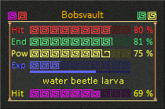

This option allows you to choose this style for the Summary window.
This style shows the player health, endurance, power, and XP status using colored bars inside the window. You can change the type of XP displayed by clicking on the XP status bar. The XP type will toggle between Exp, Rxp, Mxp, and Cxp. In addition the target name and health status are shown at the bottom of the window.
Note: The numerical value of the amount of XP cannot be displayed with this style as the game client only supports toggling the XP status bar and not an not an XP value.

Notes: The status bar skins can be changed using the choices in the Status Bar Skins option. There are some invisible buttons in the normal Summary windows. Click on the various status bars to activate them. Click on the images to either side of the player name to toggle the floating play health, endurance, power, and target health windows on/off.